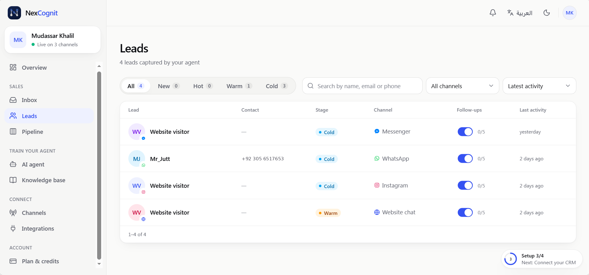

Leads
The Leads page lists every person your AI agent has captured from your channels. It helps you see who is interested, how ready they are to buy, and which leads need attention first.
Leads overview
The top of the page shows how many leads your agent has captured. Below that is the full list of leads.

Find and sort leads
- Tabs: Filter the list by All, New, Hot, Warm, or Cold. The number on each tab shows how many leads are in it.
- Search: Find a lead by name, email, or phone number.
- All channels: Show only leads from one channel, such as WhatsApp or Website chat.
- Latest activity: Change the order of the list.
What each column shows
- Lead: The customer's name. If the name is not known yet, it shows as Website visitor.
- Contact: The customer's phone number or email, if they shared it.
- Stage: The lead temperature: Hot, Warm, Cold, or New.
- Channel: Where the lead came from, such as Messenger, WhatsApp, Instagram, or Website chat.
- Follow-ups: A switch to turn follow-up messages on or off for this lead, and how many follow-ups have been sent out of 5.
- Last activity: When the lead last interacted with your agent.
Lead temperature
Your AI agent scores every lead from 1 to 10 based on how ready they are to buy.
- Hot (8–10): Ready to buy. Contact these leads first.
- Warm (5–7): Interested but not ready yet. They may need a follow-up.
- Cold (1–4): Low interest for now.
- New: Not scored yet.
Things to know
- Check the Hot tab often so ready buyers get a quick reply.
- Leads appear here automatically. You do not need to add them yourself.
- Use the channel filter to see which channels bring you the most leads.